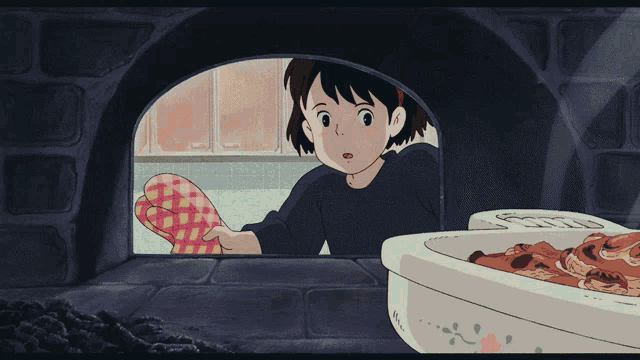
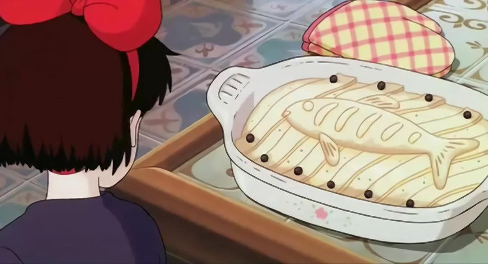

Fish Pie

Ingredients:
- 4 fillets of herring
- 1 leek
- 1 medium while onion
- 1 carrot
- 5 medium potatoes (bakers or russets)
- 2 cups spinach
- 3 eggs
- 2 tablespoons deli style or whole ground mustard
- 2 bay leaves
- 3 cups milk
- 2 tablespoons salt
- 2 tablespoons pepper
Tags:

Instructions:
- Cut up the potatoes and put them in a pot of boiling water. Boil for about 5 minutes, then add in two eggs and boil for 5 more minutes. Take out the eggs, and strain the potatoes. Then mash the potatoes in a bowl with 2/3 cup of milk.
- Add the mashed potatoes to the bottom of your casserole dish, saving about 1 potato worth of mash in the bowl.
- Slice all of the vegetables and the hardboiled eggs and saute them in a pan with some oil or butter and the bay leaves.
- Add in the rest of the milk, the mashed potato that you saved, mustard, salt and pepper. Cook everything on medium heat stirring occasionally, until the milk reaches a thick consistency, then add it into the casserole pan. Remember to remove the bay leaves.
- Cut the fish fillets into 3 inch wide chunks, and then add it into the casserole pan.
- Unroll the pie crust and put it on top. You can cut it into strips, and cut out a fish if you want to make it like the one in Kiki`s Delivery Service. Once you finish covering the casserole pan with the pie crust, beat an egg and brush it on top of the pie crust.
- Bake in a 350 degree oven for about 20-30 minutes, or until the crust is to your liking.
- Now you can eat it! Itadakimasu!
